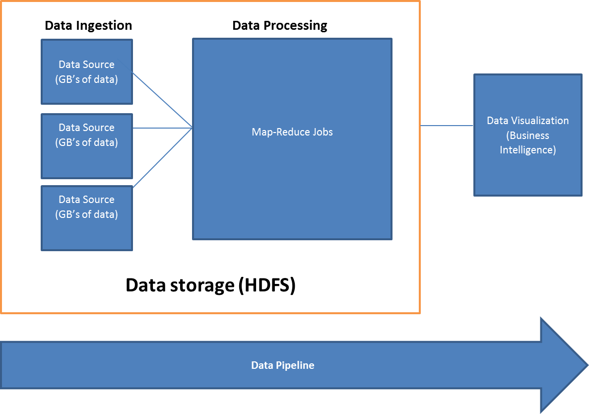

Big Data Testing
This blog is for people who want to understand what to test in the Big Data ecosystem or what are the scenarios to cover in Big Data Testing. We will cover the following topics:-
- Brief understanding on what is Big Data
- Why require Big Data Testing
- High level architecture of Big Data
- Brief explanation of Big Data Components
- Big Data Testing scenarios
- List of few tools used in Big Data
Big Data is the new buzzword in the industry primarily due to large amount of data generated daily. Big Data is used to describe data which is large in size and grows exponentially with time. Big Data is based on 4V’s Volume (amount of data), Velocity (Speed of data in and out), Variety (Range of data type and sources) and Veracity (uncertainty of data). As data increases it becomes difficult to process, handle and manage the data. While traditional Computing infrastructure cannot work efficiently to handle Big Data, New Computing technologies have been created to handle, manage huge amount of data and processing it quicker than the traditional system and technologies.
As Enterprises started to move towards Big Data it becomes important to understand the system and technologies used in order to get the best out of it. Enterprises have a new learning curve while moving towards Big Data. Learning the technologies is just a starting block whereas designing, testing and implementing are the big challenges to consider while moving to a whole new technology.
With introduction of Big Data it becomes very much important to test the big data system with usage of appropriate data correctly. If not tested properly it would affect the business significantly thus automation becomes a key part of Big Data Testing to test the application and it’s functionality. Big Data Testing if done incorrectly will make it very difficult to understand the error, how it occurred and the probable solution with mitigation steps could take a long time thus resulting in incorrect/missing data and correcting it is again a huge challenge in such a way that current flowing data is not affected. As data is very important it is recommended to have a proper mechanism so that data is not lost/corrupted and proper mechanism should be used to handle failovers.
We will be primarily discussing about Big Data Testing in Hadoop. Big Data primarily uses Hadoop for processing and handling large amount of data. Hadoop is a framework which provides cluster of computing resources for processing huge amount of data. In Hadoop extending cluster is easy with addition of nodes as required which should be carefully planned during design /requirement stage.
Let us have a look at the high level Big Data architecture.

In the above diagram, Data Storage block contains Data Ingestion layer and Data Processing layer which are used to store processed data. Ingested data is stored in HDFS which acts as input for data processing. The above diagram also shows the data pipeline from data ingestion to data visualization.
Explanation of Big Data Components
Data ingestion layer is responsible for ingesting data into Hadoop. It is a preprocessing stage and the entry point from which data comes. It is used for batch, file or event ingestion. This layer is very critical because if data is corrupted or missing then data cannot be processed leading to complete loss of data. Handling failures /failover is very important to manage. In this layer storage formats play a crucial role for compression of data which would lead to reduction in I/O.
Data Processing layer is responsible for processing of data ingested, aggregation of data as per business requirements. This layer uses business rules for processing and aggregating the data. Hadoop is used for processing data which uses Map Reduce operations. It is very important to create proper alert mechanisms in order to catch the failure and helping in resolving it as soon as possible.
Data Storage layer is responsible to store the processed data from Hadoop. As data generated is huge it becomes important to design and use this layer in order to store all the data. This needs to be designed very carefully to prevent disk corruption or other failures leading to loss of data. This layer is also referred to data warehouse for storing infrequently accessed data, archived data or old data.
Data Visualization layer is responsible for visualizing the data received from ingestion, processed as per business rules and storing the data. It is used for understanding the data and gathering insights from data. Stored data can be in any format (Excel file, Json file, Text file, Access file etc.) which is used for visualization of data. Also it is not necessary that only data stored in HDFS can be used for data visualization.
Let us examine the scenarios for which Big Data Testing can be used in the Big Data components:-
This step is considered as pre-Hadoop stage where data is generated from multiple sources and data flows into HDFS. In this step the testers verifies that data is extracted properly and data is loaded into HDFS.
- Ensure proper data from multiple data sources is ingested i.e. all required data is ingested as per their defined schema and data not matching schema should not be ingested. Data which has not matched with schema should be stored for stats reporting purpose. Also ensure there is no data corruption.
- Comparison of source data with data ingested to simply validate that correct data is pushed.
- Verify that correct data files are generated and loaded into HDFS correctly into desired location.
This step is used for validating Map-Reduce jobs. Map-Reduce is a concept used for condensing large amount of data into aggregated data. The data ingested is processed using execution of Map-Reduce jobs which provides desired results. In this step the tester verifies that ingested data is processed using Map-Reduce jobs and validate whether business logic is implemented correctly.
- Ensure Map Reduce Jobs run properly without any exceptions.
- Ensure key-value pairs are correctly generated post MR Jobs.
- Validate business rules are implemented on data.
- Validate data aggregation is implemented on data and data is consolidated post reduce operations.
- Validate that data is processed correctly post Map-Reduce Jobs by comparing output files with input files. > Note: - For validation of data ingestion or data processing layers, we should use a small set of sample data (in Kb’s or Mb’s). By using a small sample data we can easily verify that correct data is ingested by comparing source data with data ingested output data at ingestion layer. It becomes easier to verify that MR jobs are run without any error, business rules are correctly implemented on ingested data and validate data aggregation is correctly done by comparing output file with input file. > Initially for testing data ingestion or data processing layers if using large data (in GB’s), it becomes very difficult to validate or verify each input record with output record and validating whether business rules are implemented correctly becomes difficult.
This step is used for storing output data in HDFS or any other storage system (such as Data Warehouse). In this step the tester verifies that output data is correctly generated and loaded into storage system.
- Validate data is aggregated post Map-Reduce Jobs.
- Verify that correct data is loaded into storage system & discard any intermediate data which is present.
- Verify that there is no data corruption by comparing output data with HDFS (or any storage system) data.
The other type of testing scenarios a Big Data Tester can do is:-
- Check whether proper alert mechanisms are implemented such as Mail on alert, sending metrics on Cloud watch etc.
- Check Exceptions or errors are displayed properly with appropriate exception message so that solving an error becomes easy.
- Performance testing to test the different parameters to process a random chunk of large data and monitor parameters such as time taken to complete Map-Reduce Jobs, memory utilization, disk utilization and other metrics as required.
- Integration testing for testing complete workflow directly from data ingestion to data storage/visualization.
- Architecture testing for testing that Hadoop is highly available all the time & Failover services are properly implemented to ensure data is processed even in case of failure of nodes.
Note: - For testing it is very important to generate data for testing covering various test scenarios (positive and negative). Positive test scenarios cover scenarios which are directly related to the functionality. Negative test scenarios cover scenarios which do not have direct relation with the desired functionality.
List of few tools used in Big Data
Data Ingestion - Kafka, Zookeeper, Sqoop, Flume, Storm, Amazon Kinesis.
Data Processing - Hadoop (Map-Reduce), Cascading, Oozie, Hive, Pig.
Data Storage - HDFS (Hadoop Distributed File System), Amazon S3, HBase.
At the end of this blog you understand the various scenarios which can be tested in Big Data domain. You know what is Big Data and why do we require Big Data Testing. It made you aware of the Big Data architecture with brief explanation of its components. Lastly few tools were mentioned which are used within the Big Data System.
In the next blog we will look at a use-case for a practical scenario as an example for Big Data Testing. It will cover the problem statement followed by testing via traditional method and importance of creating/using automation script to automate testing in Big Data domain.